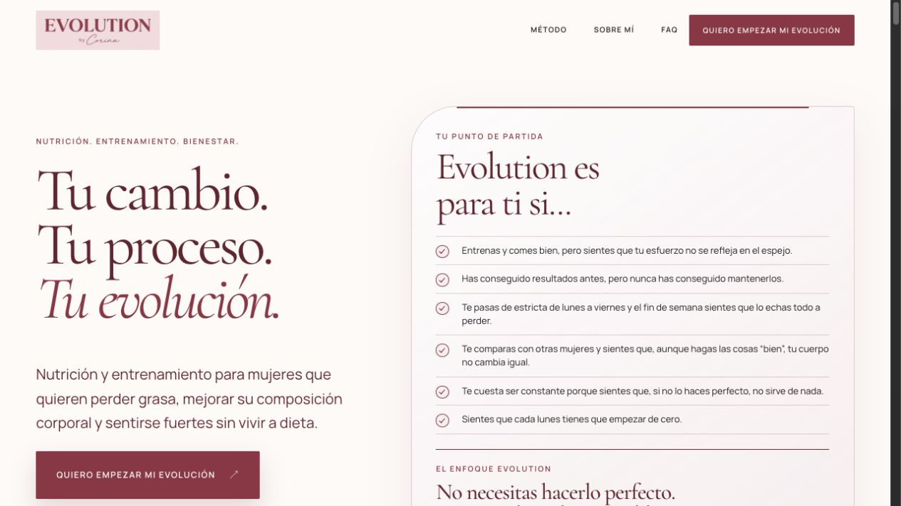
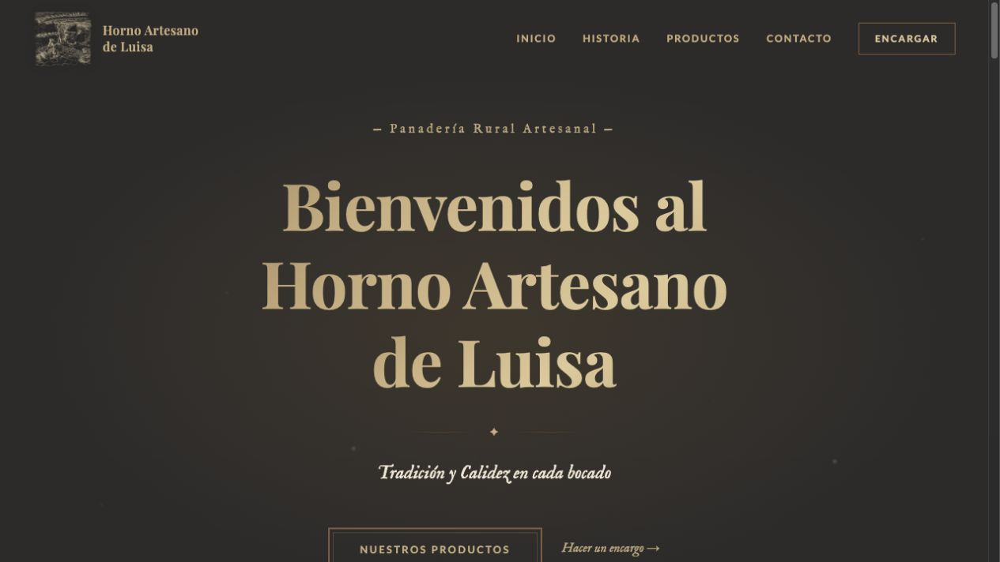

Evolution by Corina (abre en una pestaña nueva)
Web para una profesional de nutrición y entrenamiento personalizado. Presenta su método y servicios, con preguntas frecuentes y un cuestionario para iniciar el proceso.
TÉCNICO ASIR · DESARROLLO WEB
Soy Francisco Castillo Martín. Trabajo con sistemas, redes y ciberseguridad, y creo páginas web profesionales para dar forma a cada proyecto.
01 / PROYECTOS SELECCIONADOS
Creo páginas web para profesionales y negocios.
Estos son dos proyectos que ya puedes visitar.

Web para una profesional de nutrición y entrenamiento personalizado. Presenta su método y servicios, con preguntas frecuentes y un cuestionario para iniciar el proceso.

Web para una panadería artesanal de Capileira. Su historia, un catálogo de panes y dulces, y accesos directos para hacer encargos por teléfono o WhatsApp.
Infraestructura simulada de cinco nodos sobre Proxmox, gobernada por IA local con confirmación humana.
Inicio de sesión único en Docker Compose: Keycloak como proveedor de identidad, oauth2-proxy, Nextcloud y Nginx con TLS.
02 / EXPERIENCIA
Experiencia con servicios en producción y una base práctica construida con laboratorios y proyectos propios.
Mi trayectoria en PDFFEB 2026 — MAY 2026 FCT
Servicio Provincial Tributario de Granada
JUL 2024 — JUN 2026
CFGS ASIR · IES Zaidín Vergeles
03 / SOBRE MÍ
Soy Técnico Superior en Administración de Sistemas Informáticos en Red. Me especializo en infraestructuras seguras y automatizadas con tecnologías open source, y también desarrollo páginas web.
Linux, contenedores, redes e identidad: las tecnologías con las que trabajo y construyo mis proyectos.
Explorar mi GitHub (abre en una pestaña nueva)IES Zaidín Vergeles
Salesianos San Juan Bosco
Cambridge English
04 / CONTACTO
¿Necesitas una web para tu negocio o buscas un perfil de sistemas? Cuéntame qué tienes en mente.
EscríbemeGranada, España